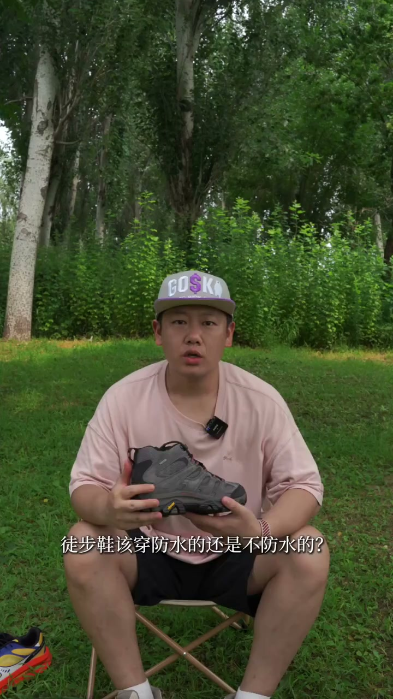
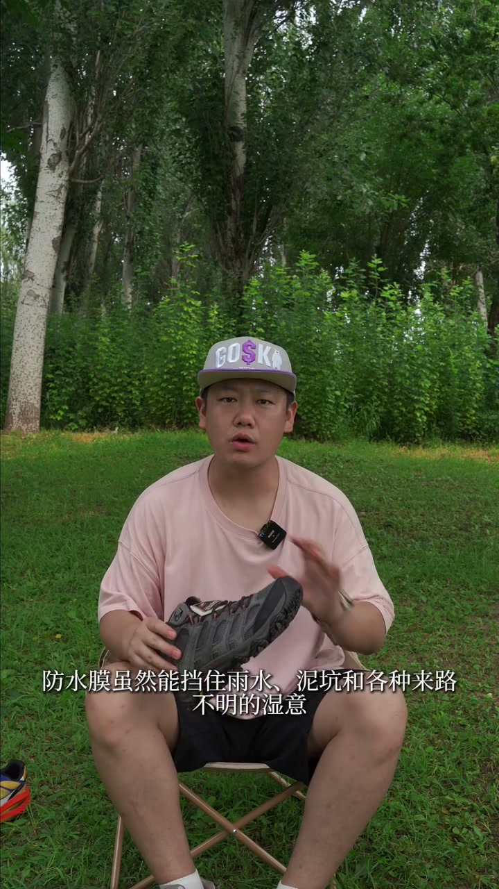
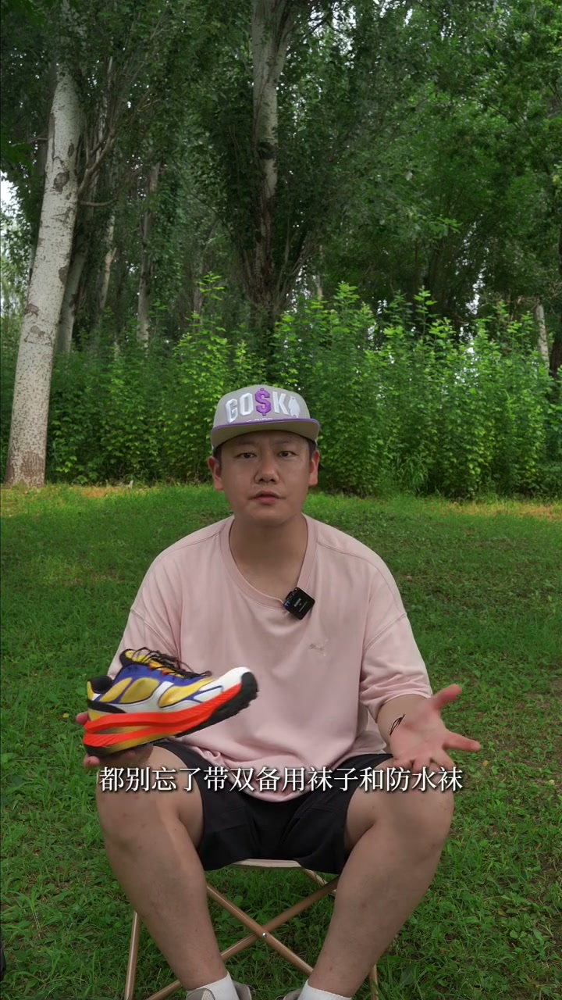

内容要点
这段视频围绕「你真的需要防水徒步鞋吗？」展开，按时间介绍其中的关键环节。土布鞋该穿防水的还是不防水的。
开场与主题引入
土布鞋该穿防水的还是不防水的。两拨人吵的是不可开胶啊。相互看对方都像是个大猿众。第一拨人认为必须整双羽鞋在出门。觉得没防水膜就像出门没穿裤了。另一拨人认为防水膜像裹上塑料布。觉得舞脚太糟糕了。但其实这并非是一个非此即彼的问题。而是一道长景题。取决于你去什么地方

[00:00] 开场与主题引入相关画面。
Opening and theme-introduction footage.
核心内容
但实际上这可能会适得其反。听起来虽然有被常理。但对于频繁涉水过河的人来说。非防水鞋往往是更好的选择。过溪湿了也不怕。走几步很快就干了。实验数据表明同一款鞋。湿透之后非防水鞋的干燥速度。比防水鞋要快很多。所以你的防水鞋一不小心内部进水
操作演示
而且是旱角。那非防水鞋是更好的选择。防水膜虽然能挡住雨水。一坑和各种来路不运的湿气。但透气性相对来说却要大打折扣。如果你主要在早春。深秋或者冬天活动。几乎偏冷偏潮。路面是鸡血。薄冰冻土

[01:18] 操作演示相关画面。
Operational demonstration footage.
进阶技巧
但有个前提。防水鞋血泡加一样魔化。是零度左右湿血天气的点三角。如果你只想买一双徒步鞋。那非防水鞋可能是更好的选择。因为它能覆盖你90%的场景。那剩下的10%呢。用背用袜子。或者防水袜就能扛过去。那无论你选什么鞋

[01:55] 进阶技巧相关画面。
Footage on advanced techniques.
总结
但有个前提。